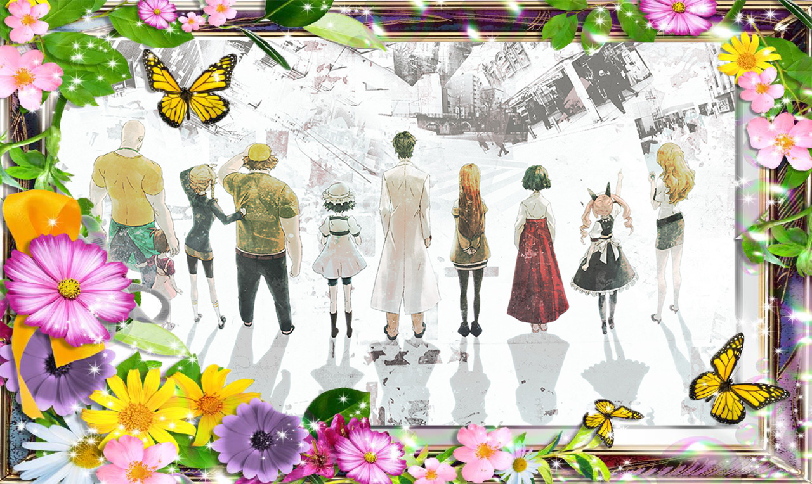

Như đã giới thiệu trước đây, Steins Gate 0 là tựa game tiếp nối của bộ visual novel rất nổi tiếng xếp vào hàng "không thể không chơi" đối với các fan của thể loại này - Steins Gate. Trong tạp chí Famitsu số mới nhất, sản phẩm của 5pb và Mages hợp tác phát triển đã ấn định thời điểm phát hành chính thức tại thị trường Nhật Bản vào tháng 11 tới, cụ thể là ngày 19 dành cho các hệ máy PS4, PS3, PS Vita.
Steins Gate là một bộ Visual Novel có cốt truyện tương đối phức tạp, đồng thời phiên bản đầu tiên cũng đã khai thác gần như trọn vẹn nội dung du hành thời gian và mang đến cho người chơi cái kết không thể mỹ mãn hơn. Vì vậy mà nhiều fan hâm mộ lúc này vẫn rất tò mò về cách mà hãng phát triển sẽ dẫn dắt cốt truyện mới trong Steins Gate 0, yếu tố vẫn được giữ bí mật cho tới thời điểm hiện tại.
Qua một số hình ảnh chụp từ tạp chí Famitsu trước đây, các fan hâm mộ có thể thấy sự xuất hiện trở lại của dàn nhân vật cũ như Okabe Rintaro, Makise Kuritsu, Hashida Itaru, Suzuha... đồng thời là một nhân vật nữ mới chưa rõ danh tính.
Với một thương hiệu thành công và nổi tiếng như Steins Gate , việc Steins Gate 0 sẽ được chuyển thể lên PC và phát hành tại thị trường Mỹ dưới ngôn ngữ tiếng Anh có lẽ chỉ là vấn đề thời gian mà thôi, dù vậy hiện tại 5pb vẫn chưa đả động gì tới vấn đề này.